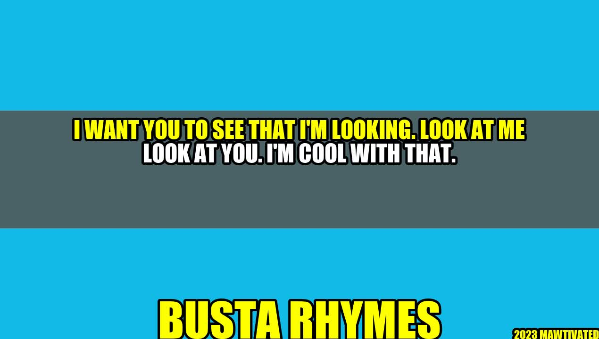

The Power of Eye Contact – A Lesson from Busta Rhymes
 As a hip hop legend, Busta Rhymes is known for his dynamic stage presence, elaborate costumes and rapid-fire rhyming. But there is one other thing that sets him apart from his peers – his ability to establish a powerful connection with his audience through eye contact. In one of his interviews, Busta Rhymes talked about the importance of eye contact, especially in the music industry where artists are often distracted by the bright lights and the massive crowds. He said, "People pay good money to come see you perform. They want to feel like you're talking to them directly. And for that, you need to make eye contact. You need to show them that you're not just performing, but you're also connecting." Busta Rhymes' words ring true not just for musicians, but for anyone who wants to build stronger relationships, command more attention and radiate confidence. Here are some reasons why eye contact matters, along with some practical tips on how to master it.
Why Eye Contact Matters
1. Eye contact builds trust and rapport: By locking eyes with someone, you signal that you are interested in them and present in the moment. This can help to break down barriers, build bridges and establish a sense of unity. 2. Eye contact communicates confidence and authority: When you make direct eye contact, you appear more confident and self-assured. This can be particularly helpful in job interviews, business meetings and other situations where you need to make a strong impression. 3. Eye contact enhances communication: When you look someone in the eye, you are better able to read their body language, facial expressions and nonverbal cues. This can help you to better understand their emotions, thoughts and intentions, and respond more appropriately.
How to Master Eye Contact
1. Start small: If making eye contact feels uncomfortable or unnatural, start with short bursts of a few seconds at a time. Gradually increase the duration and frequency as you become more comfortable. 2. Be mindful of your body language: Good eye contact is about more than just looking someone in the eye. You also need to be aware of your posture, facial expression and gestures to create an overall impression of confidence and interest. 3. Don't overdo it: While eye contact is important, too much of it can come across as aggressive or creepy. Aim for a balance between engaging and respectful.
Conclusion
1. Eye contact is a powerful tool for building trust, communicating confidence and enhancing relationships. 2. Learning to master eye contact takes practice and mindfulness. 3. By making eye contact a regular part of your interactions, you can become a more engaging, confident and influential communicator. Hashtags: #eyecontact #communication #confidence #BustaRhymes #rapmusic #personaldevelopment SEO Keywords: eye contact, communication, confidence, personal development, Busta Rhymes, rap music Category: Personal Development, Communication, Music
Curated by Team Akash.Mittal.Blog
Curated by Team Akash.Mittal.Blog
Share on Twitter Share on LinkedIn